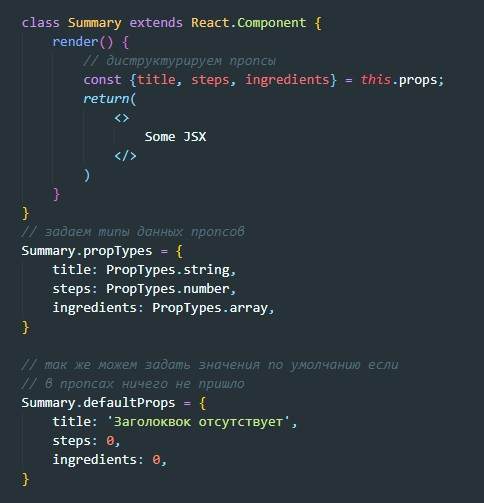
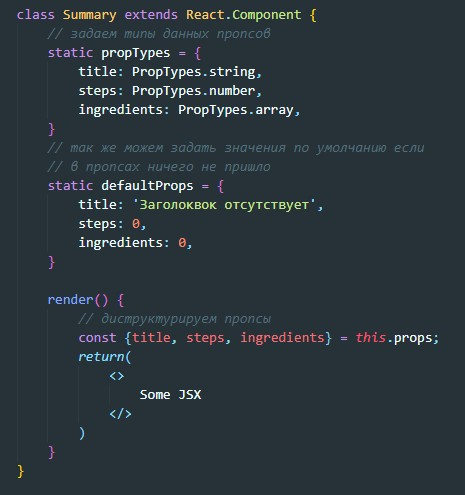
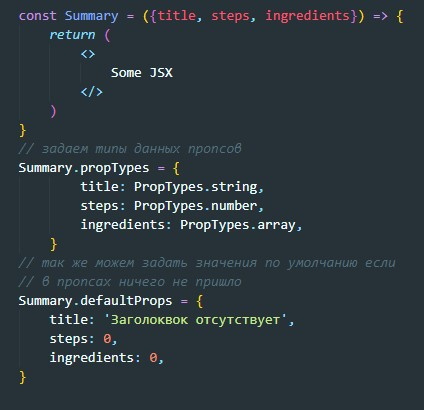

propTypes
В React есть встроенная автоматическая проверка свйоств на типы переменных:
- Массивы - React.PropTypes.array
- Булевые значения - React.PropTypes.bool
- Функции - React.PropTypes.func
- Числа - React.PropTypes.number
- Объекты - React.PropTypes.object
- Строки - React.PropTypes.string
Указание типов данных у props у классовых компонент не имеющих состояние
Первый способ - указание типов за пределами класса

Второй способ - указание типов инкапсулируя в класс в виде статических свойств

Указание типов данных у props у функциональных компонент не имеющих состояние
